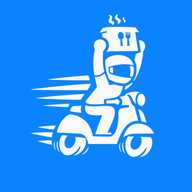

배다리요앱 설치
정식 출시 전 테스트 버전이에요. 지금은 구글 규칙상 테스터 그룹에 가입한 계정만 설치할 수 있고, 테스터들이 14일 동안 써야 정식 출시를 신청할 수 있어요. 그동안 앱을 지우지 말고 평소처럼 써 주세요.
순서대로 진행해야 앱을 다운받을 수 있어요.
- 테스터 그룹 가입
그룹 가입하기
로그인 후에 그룹 참여 누르고, 뜨는 창에서 한 번 더 그룹 참여를 눌러 가입해 주세요.
- 테스터 되기
테스터 되기
Become a tester를 눌러 주세요.
다음 화면에서 참여 취소 버튼 Leave the program은 누르지 마세요. - Play 스토어에서 설치
Play 스토어 열기
설치를 눌러 주세요.
아이폰 앱은 준비 중이에요.안드로이드 정식 출시 뒤에 열어요.